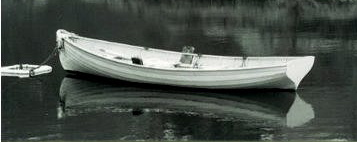

"IT BEGINS with the most famous gong in jazz. A few seconds later, the double bass takes up a four-note “Love Supreme” motif. John Coltrane starts a blistering saxophone solo. And 30 minutes later it is all over. But it still sounds as fresh as it did 50 years ago ... " - The Economist, "'A Love Supreme' at 50 - A Glorious Finale", 2015
"At certain moments of lucidity, the mechanical aspect of [people’s] gestures, their meaningless pantomime makes silly everything that surrounds them. A man is talking on the telephone behind a glass partition; you cannot hear him, but you see his incomprehensible dumb show: you wonder why he is alive. This discomfort in the face of man’s own inhumanity, this incalculable tumble before the image of what we are, this “nausea,” as a writer of today calls it, is … the absurd." - Albert Camus, "The Myth of Sisyphus", 1942
@stlavender 2015